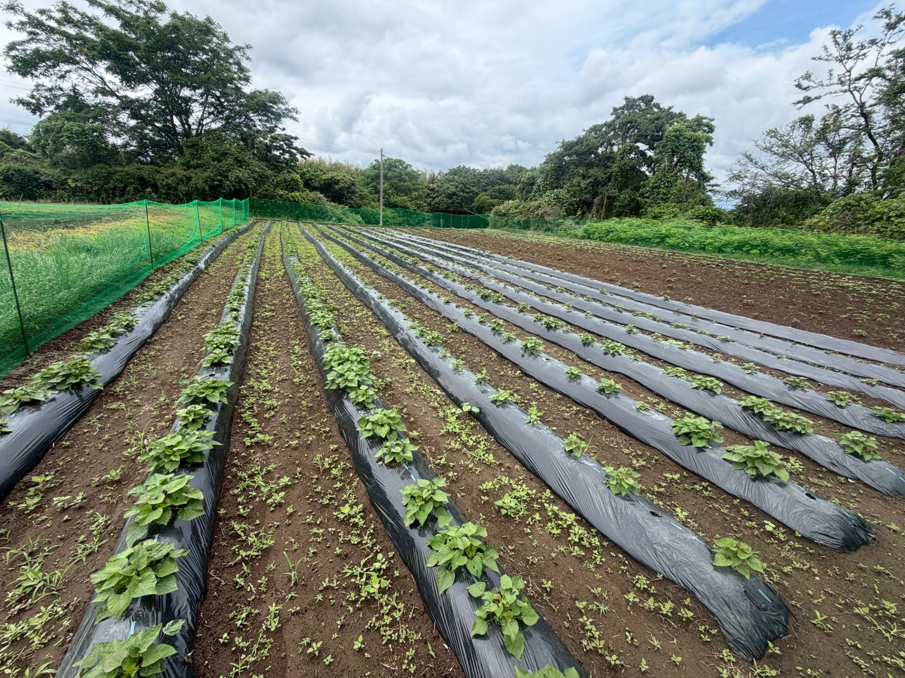
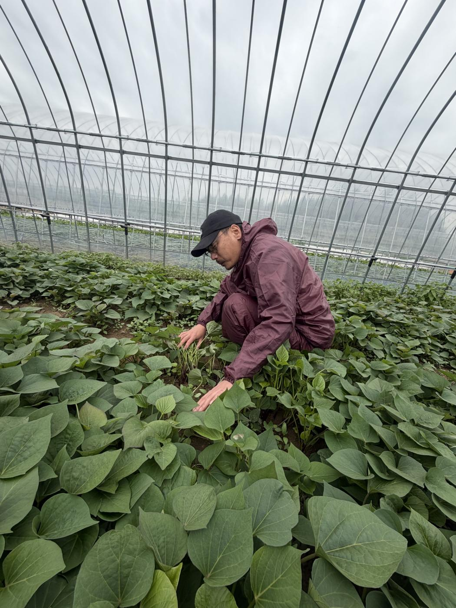
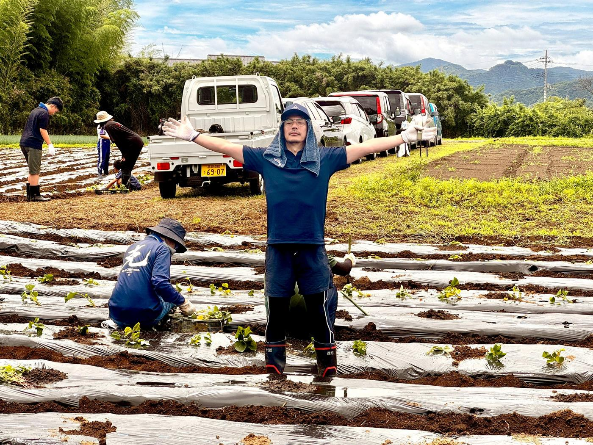
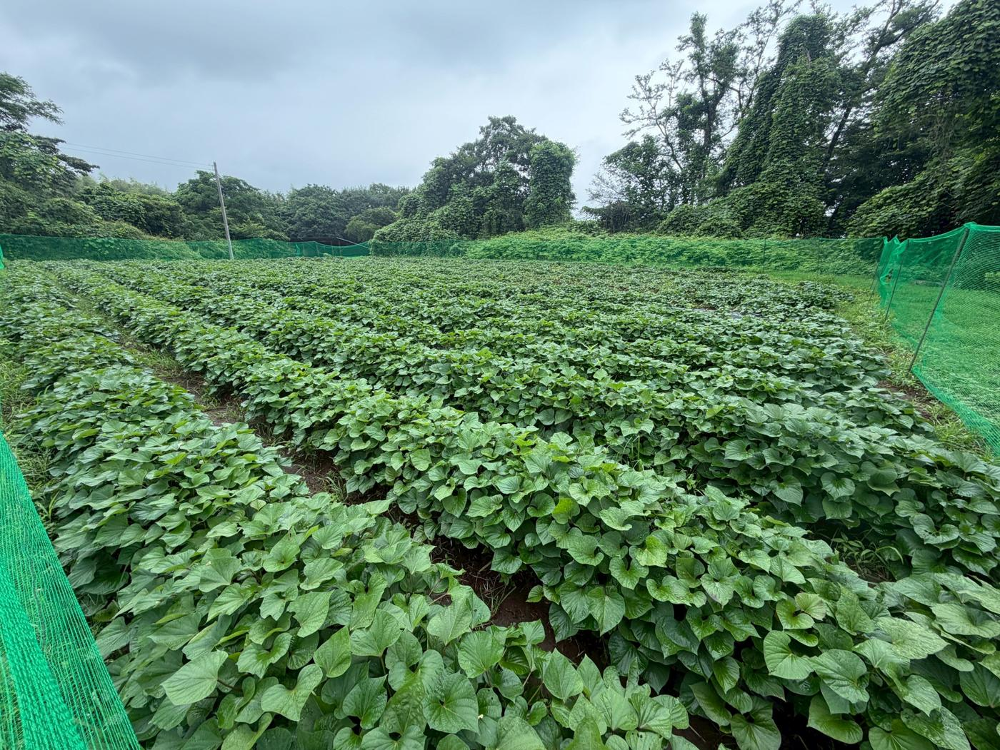
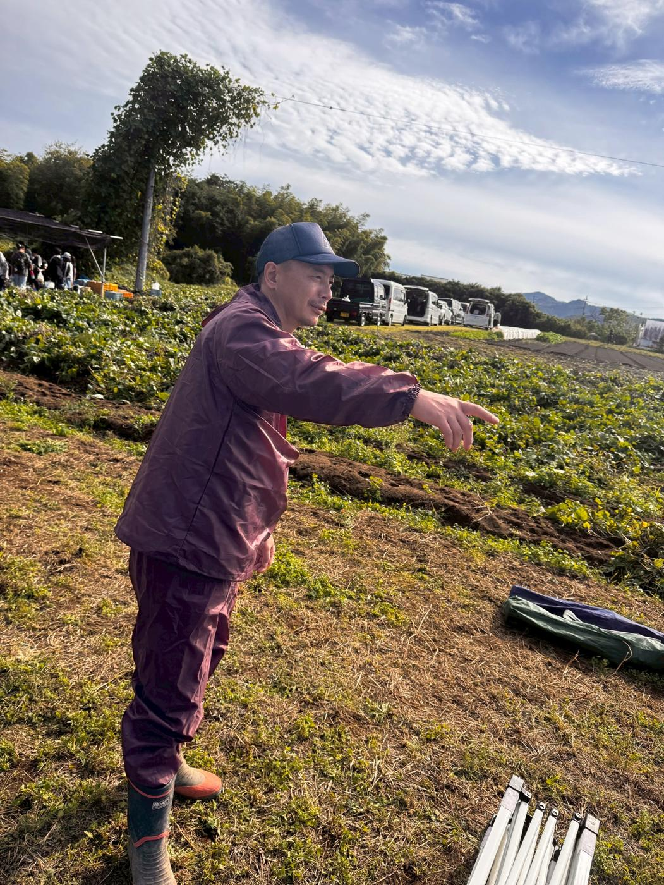
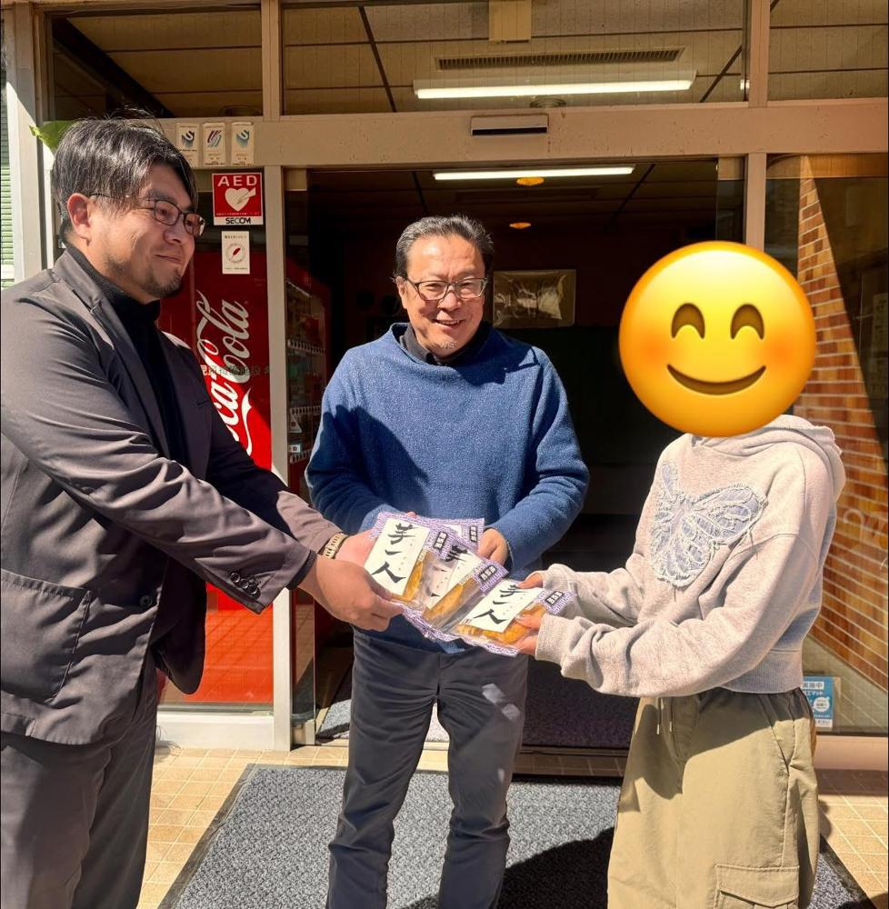
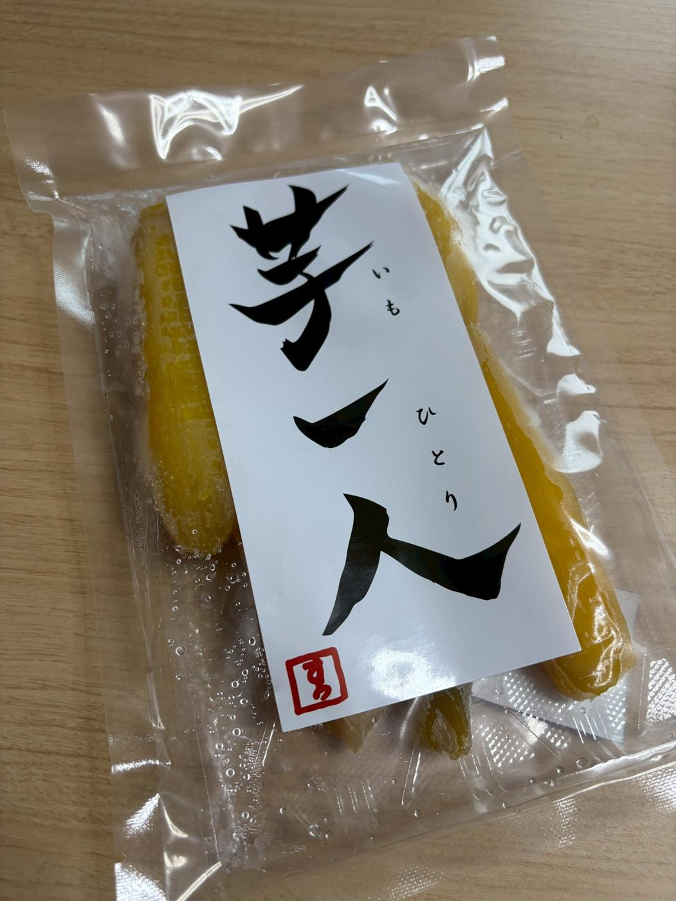

手間をかけるほど、甘くなる。
群馬の畑でさつまいもを育て、掘って、寝かせて、蒸して、冬の陽に干す。一人プロジェクトの干し芋は、一年をかけてできあがります。畑には、子どもたちや地域の人、障害のある方が一緒に立っています。
-
04月
苗を育てる
ハウスの中で、植えるための苗を育てます。

-
05月
植える
畑に畝をつくり、苗を一本ずつ植えていきます。みんなで手を動かす日です。

-
08月
育つ
夏の陽を浴びて、葉が畑を覆っていきます。

-
10月
掘る
秋、土の中から芋を掘り上げます。

-
11月
寝かせる
掘った芋は、すぐには食べません。暗く涼しい場所でしばらく寝かせると、甘みが増していきます。
（この間、畑も、芋も、静かです。）
-
12月
蒸して、干す
蒸した芋を切り、冬の乾いた風と陽に当てて干します。下の線の点を動かすと、干していく様子が見られます。
蒸したて。やわらかく、色は淡い。
-
03月
届ける
2025年3月、希望館に干し芋を納品しました。売上は、支援先や地域へ還元されます。


畑は、だれでも立てる場所。
- 子どもたち植える日、掘る日に。土にふれる体験として。
- 児童養護施設一緒に育て、できた干し芋を届けます。
- 障害のある方苗の手入れや袋詰めを、仕事として。
- 地域の人ボランティアとして、畑づくりから。
芋から、応援をはじめる。
フォローする、干し芋を買う、畑に来る。どの段からでも、関われます。